英文
英文罗等
编者按
新的千年到来之前，对约翰·贝尔著名的“不等式”进行的种种仔细的验证表明量子物理学似乎与任何定域实在论的解释都不相吻合，定域实在论认为系统有确定的性质，与世界的其他事物无关，且任何影响都不能超光速传播。但由于存在与实验不完美有关的各种各样的、包括粒子探测器的有效探测效率在内的“漏洞”，争论一直持续存在。本文中，玛丽·罗和其同事们报道了利用重铍离子所做的实验中贝尔不等式的违背。由于他们在实验中可以探测到所有的粒子，从而堵上了一个漏洞。然而，即使是现在，仍不能排除对量子理论的所有可能的定域实在论的解释。 英文
定域实在论的观点认为，无论是否被测量，物体都具有确定的性质，对这些性质的测量并不受足够远发生的事件的影响[1]。爱因斯坦–波多尔斯基–罗森[2]用这些合理的假设，得出量子力学是不完备的结论。从1965年开始，贝尔和其他人构建了一个数学不等式，依靠实验验证能区分量子力学与定域实在论的理论[1,3-5]。已进行的很多实验[1,6-15]与量子力学理论相符，而与定域实在论不符。但这些结论仍然是大家相当感兴趣和有争议的问题，一些实验仍在不断完善以克服那些允许定域实在论解释的“漏洞”。我们现已测量了大质量的纠缠粒子（9Be+离子）在经典性质下的关联：这些关联违反了贝尔不等式的形式。我们得到的贝尔“信号”测量值是2.25±0.03，然而2是自然界定域实在论所允许的最大值。与过去的重粒子测量相比，这次背离贝尔不等式的结果是使用一组完备测量得出的。此外，我们装置的高检测效率消除了所谓的“检测”漏洞。 英文
验证贝尔不等式的早期实验受限于两个似乎令人难以置信的初级漏洞。第一个漏洞可称为定域性的，或“光锥”漏洞，这个漏洞指的是两个明显分离的事件之间的关联有可能是某些未知的亚光速信号在装置的不同区域之间传播造成的。阿斯佩[16]给出了这个问题的简明综述，综述从文献8的实验开始，并着重介绍了由因斯布鲁克小组[15]报道的测量之间严格的相对论性分离。日内瓦实验[14,17]也报道了类似的结果。第二个漏洞通常被认为是检测漏洞。至今的所有实验检测的效率很低，以至于允许存在即使整个系综满足贝尔不等式，而检测事件的子系综与量子力学符合的可能性。因此，必须假设检测的事件代表整个系综；这是一个合理的取样假设。现已提出了堵上这个漏洞的数个建议[18-24]；我们相信，本文所述乃是首次针对堵上此漏洞所进行的实验。我们实验的另一个特点是采用大质量粒子。之前的贝尔不等式验证是利用质子进行的[25]，但检测事件的解释依据是量子力学，如量子力学中给出的对称性被用于将数据外推到贝尔角的完备集。此处我们并未采用这些假设。 英文
由克劳塞、霍恩、希莫尼和霍尔特[5]（CHSH）提出的这类贝尔测量包括三个基本部分（图1a）。第一部分是制备在可重复的起始组态中的一对粒子（图1a中“魔盒”的输出）。第二部分是对每个粒子独立地用一个可变的经典操控，这些操控标记为ϕ1和ϕ2；最后在检测阶段，对每个粒子的经典性质进行测量，皆有两个可能的结果。这些结果的关联函数为
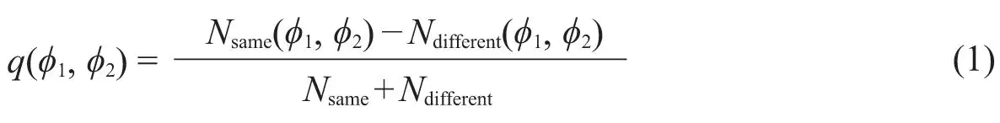
式（1）是多次重复实验的测量结果。式中Nsame和Ndifferent分别是两个结果相同和不同时的测量数目。贝尔不等式的CHSH形式表述为，由定域实在论得出的相关性必须遵从下式：
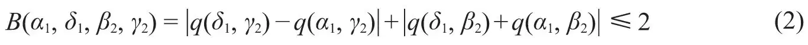
式中α1和δ1（β2和γ2）是ϕ1（ϕ2）的特定值。例如，在光子实验中[15]，利用参数下转换技术把一对光子制备在爱因斯坦–波多尔斯基–罗森（EPR）单重态上，然后让每个光子通过一个角度可变的偏振片。最后确定光子的偏振状态：垂直或水平。 英文
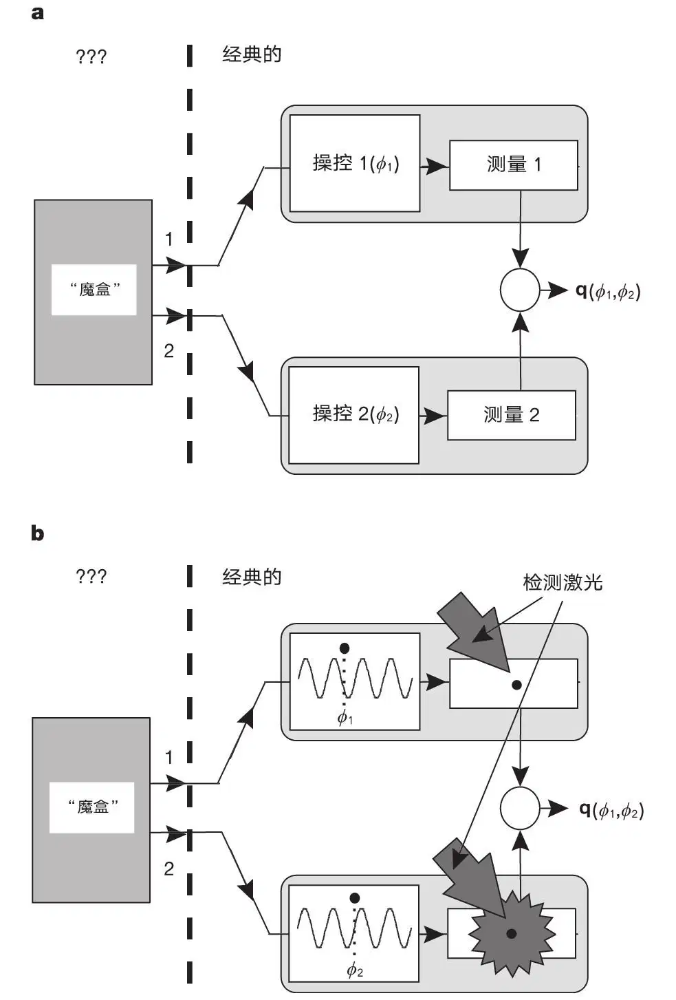
图1．贝尔不等式验证实验如何开展的示意图。实验思想是一个“魔盒”发射一对粒子。通过应用各种经典的操控方法，我们试图测定这些粒子的联合性质，并观测其测量输出的关联。a，一般的CHSH型贝尔不等式实验；b，我们的实验。操控是用相位为ϕ1和ϕ2的激光波分别加到离子1和2上。测量是对离子施加探测激光后，检测从离子发射出来的光子。有两个可能的测量结果，几乎检测不到光子（如图中对离子1的描绘）或检测到许多光子（如图中对离子2的描绘）。 英文
实验中我们把一对二能级原子离子制备在可重复组态（纠缠态）上。其次，在粒子上加一激光场；经典操控的变量是每个离子所在处这个场的相位。最后，应用检测激光束之后，被测的经典性质是从粒子发射出的散射光子的数量（通过它可有效地测量粒子的原子态）。图1b展示了我们的实验与一般实验的对应。在腔量子电动力学意义下产生的纠缠的原子[26]能类似地用于测量贝尔不等式。 英文
实验装置如文献27中所描述。两个9Be+离子以5 MHz的轴向质心频率约束在沿着线性保罗阱的轴上。我们选择2S1/2基态的两个可分辨的能级，
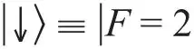
，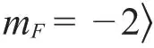
和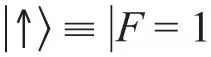
，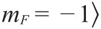
，式中F和mF是总角动量的量子数。这些态经由相干受激拉曼跃迁耦合。用于驱动跃迁的两束激光波长为313 nm，两者的差频接近态的超精细分裂ω0≅2π×1.25 GHz的跃迁。两束激光彼此相互垂直，其波矢差∆k沿着阱的轴。如文献27中所述，在这种组态中可能产生纠缠态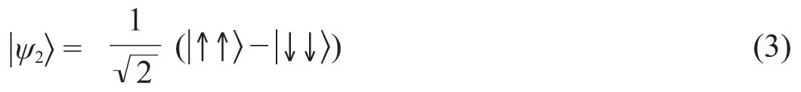
对于运行数据，保真度
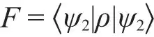
约为88%，式中 是我们所产生的态的密度矩阵。在以下讨论中，我们假定
是我们所产生的态的密度矩阵。在以下讨论中，我们假定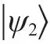
是实验的起始条件。 英文
在产生了态
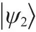
后，我们再应用拉曼光束作为一个短脉冲（约400 ns），因此每个离子j的态在相互作用绘景中转变为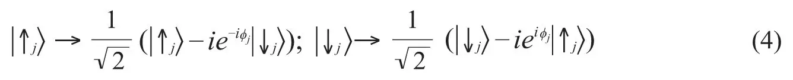
相位ϕj是在离子j的位置上驱动拉曼跃迁的场的相位（更明确地说，是两束拉曼光束之间的相位差），对应于图1中的输入ϕ1和ϕ2。我们在实验中按两种方式设定其相位。首先，在离子沿着阱轴运动时，相位变化为∆k·∆xj。例如，沿着阱轴的平移
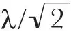
，相当于2π的相移。此外，改变决定拉曼差频的射频合成器的相位ϕs，使加在两个离子上的激光相位发生同量的变化。从而离子j的相位是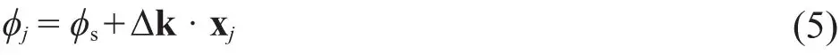
在实验中，轴向阱的强度改变，因此离子绕阱的中心对称地运动，给出∆x1=-∆x2。因此阱的强度控制了相位差值，∆ϕ≡ϕ1-ϕ2=∆k·(x1-x2)，合成器控制了总相位ϕtot≡ϕ1+ϕ2=2ϕs。这些关系的标定在方法一节中进行讨论。 英文
一个离子的态，
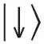
或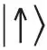
，用“检测”激光束中的圆偏振光探测离子来确定[27]。在检测脉冲持续时间内，处于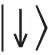
态或明态的离子散射许多光子，用光电倍增管检测到平均约64个，处于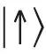
态或暗态的离子散射很少的光子。对两个离子而言可能出现三种情况：无离子处于明态，一个离子处于明态，两个离子处于明态。在一个离子处于明态的情况下，不必知道是哪一个离子，因为贝尔的测量仅要求知道离子态是否不同。图2示出了直方图，每个实验重复测量20,000次。用光电管收集到的光子进行计数即可区分这三种情况。 英文
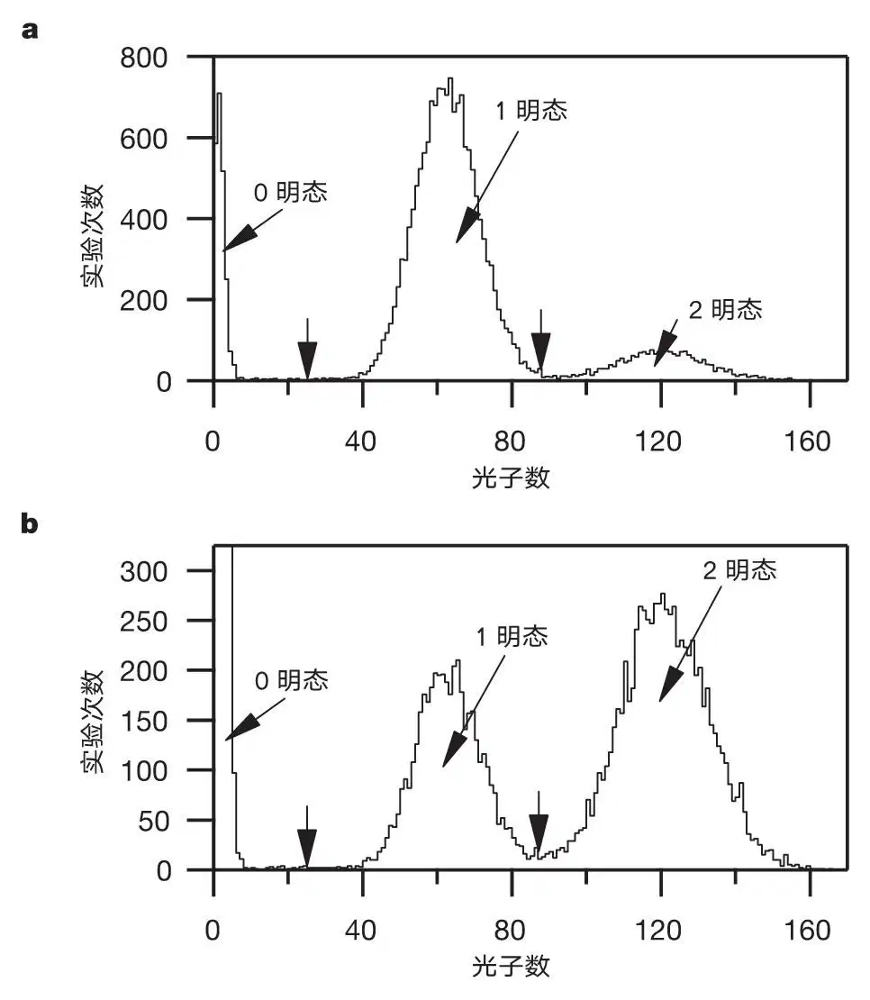
图2．包含20,000次实验的检测结果的典型数据直方图，所用的总时间约为20 s。在每次实验中，在
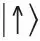
态的粒子数，首先相干转移到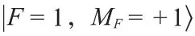
，使得它在检测激光作用下也不发出荧光。打开检测激光，光电管在1 ms内记录检测到的荧光光子数。在一个离子处于明态和两个离子处于明态的情况之间进行截断，使两个相等分布扩展到截断点以外的部分所占的比例相等。垂直的箭头表示在25（86）计数时，在0（1）个离子处于明态与1（2）个离子处于明态峰值之间的截断。a. 用ϕ1=3π / 8和ϕ2=3π / 8的负相关数据直方图。对于这些数据，N0≅2,200，N1≅15,500和N2≅2,300。b. 用ϕ1=3π / 8和ϕ2=-π / 8的正相关数据直方图。对于这些数据，N0≅7,700，N1≅4,400和N2≅7,900。无离子处于明态的峰值将垂直扩展到2,551。 英文
我们的实验还能用磁场中（在
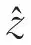
方向上）1/2自旋磁矩的语言这另一种方式进行描述。自旋系统的动力学与我们的二能级系统是相同的[28]。结合操控（式（4））和测量步骤，我们有效地测量了每个离子j在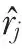
方向上的自旋投影，其中矢量在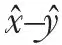
平面上与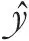
呈角度ϕj。虽然，我们已经使用量子力学的语言来描述操控和测量步骤，我们强调两者是与光学装置中波片的经典旋转和偏振的测量完全类似的步骤。 英文
这里，我们计算了关联函数的量子力学预测结果。我们的操控步骤将起始态
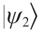
变换为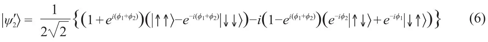
应用测量算符
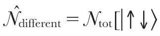
和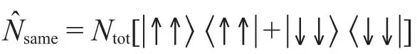
，计算的关联函数为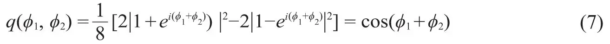
根据量子力学，CHSH不等式（式（2））在特定相角组合处达到了最大的背离。一组这样的组合为α1=-（π / 8），δ1=3π / 8，β2=-（π / 8）及γ2=3π / 8。用这些相角，量子力学预测
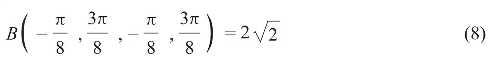
这背离了要求B≤2的定域实在论条件。 英文
实验上用列于表1的四组相角测量关联函数。四组相角的每一组，实验都重复Ntot=20,000次。对每组相位，用下式计算关联函数
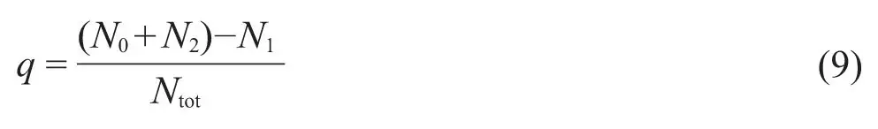
式中N0 , N1, N2分别是以0, 1和2个离子处于明态的事件数目。四组相角的相关值已用式（2）代入贝尔信号B（α1, δ1, β2, γ2）中。表2给出了五次数据运行的相关值和得出的贝尔信号。 英文
表1. 用于贝尔实验的四组相角
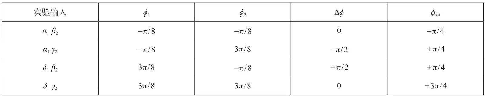
表2. 五次实验运行的相关值和得出的贝尔信号
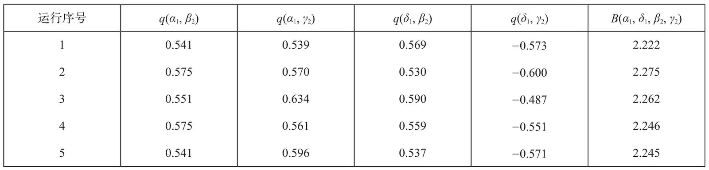
实验的角度数值是α1=-(π / 8)，δ1=3π / 8，β2=-(π / 8）及γ2=3π / 8。对q和B的统计误差分别为0.006和0.012。对q和B的系统误差（见正文）分别为0.03和0.06。 英文
在此为止，我们已用理想的相角设定描述了实验。然而，在实际实验中，两次代入贝尔不等式的角α1、δ1、β2和γ2并不是完全相同的。在我们的实验中，这个误差主要来自合成器的相位不稳定度，使相角在四分钟内产生了明显的漂移，这正是一整套测量所需要的时间。这项随机漂移对于关联函数来说，在这一时标上产生了±0.03的方均根误差，它传递到贝尔信号的误差为±0.06。来自五个数据组的贝尔信号的误差则为±0.03，与观测到的每次运行变化是相符的。对表2中五个贝尔信号求平均，我们得到的实验结果为
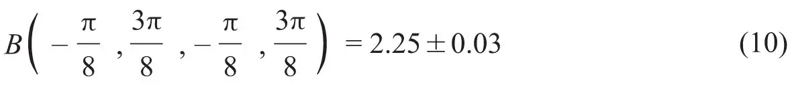
如果考虑到我们实验中的不完美的方面（不完美的态保真度、操控和检测），这个结果与量子力学的预测值是一致的。 英文
上述结果是利用每个实验的输出量得出的，因此不要求有合理取样的前提。在这种情况下，检测效率的问题由检测准确度代替。在我们实验中，态检测的不准确的主要原因来自光抽运效应引起的明态变为暗态。例如，检测光不完美的圆偏振允许离子由
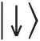
态抽运到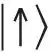
，从而处于明态的离子收集到较少的光子。由于这类误差的存在，一个离子处于明态而被错判为处于暗态的概率是2%。这类不完美的检测准确度降低了测量相关性的量级。我们估计本文贝尔信号在完美检测准确度下将是2.37。 英文
我们已经给出了每次实验记录的贝尔不等式测量的实验结果。我们的检测效率高到足以不要求有合理取样的前提也可以给出贝尔不等式背离的结论，从而在这个实验中堵上了检测漏洞这个问题。离子之间相距很远，远到没有已知的相互作用可以影响实验结果；但是，本文还没有解决光锥漏洞的问题。这个实验的更多细节将发表在其他地方。 英文
方法
相位标定
实验是在每个离子的拉曼激光光束场的特定相位差下运行的。为了实现激光相位的完备集，每个离子上的激光相位被标定为轴向阱强度的函数。我们强调标定方法本质上是经典的。虽然，量子力学影响了标定方法的选择，但并没有使用量子力学来解释信号。一般的理论用于描述从一系列激光脉冲得出的信号，以及它与系统的经典物理参量的相关关系，经典的物理参量包括离子上的激光相位和离子的位置。 英文
在标定过程中，对两个离子进行了拉姆齐实验。每次实验中第一个π / 2的拉比旋转都相同。对于第二个π / 2拉比旋转，离子处的激光相位发生了改变，离子1处为ϕ1，离子2处为ϕ2。检测信号是在检测期间记录的总光子数。用一个辅助的单离子实验，我们首先在实践经验上确立了单个信号仅与单个离子处的激光相位有关，信号记为C+Acos ϕj。此处的C和A是单离子信号的偏置和振幅。我们测得检测器是线性的，因此检测信号是两个离子的单独信号之和。从而两个离子的信号为
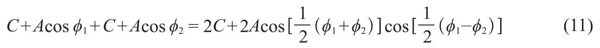
当扫描ϕs=（ϕ1+ϕ2）/2时，通过测量条纹振幅和相位，我们标定了ϕ1-ϕ2作为阱强度的函数，并确保ϕ1+ϕ2与阱强度无关。 英文
我们按照惯例，在用于纠缠制备脉冲的离子分离处，关联函数在ϕ1=ϕ2=0（或∆ϕ=ϕtot=0）处取得最大值。在测量的开始，我们通过保持∆ϕ=0，进而用实验方法找到ϕ1=ϕ2=0的条件，并扫描合成器的相位来找到关联函数最大值。然后在实验中通过调整轴阱强度来设置∆ϕ，通过增加合成器相位来设置ϕtot，把相角调整到上文给出的相应值。 英文
定域性的争论
离子间相隔的距离约为3 µm，这是每个离子的波包尺寸的100倍。虽然，库仑相互作用与离子的运动发生强烈的耦合，但它并不影响离子的内部状态。在这个距离上，所有已知的相互作用的预期都是很小的。例如，在离子之间的偶极–偶极相互作用稍微改变了光散射强度，但这种影响对于所用的离子之间的距离来说是可以忽略不计的[29]。同时，检测立体角大到足以使杨氏干涉条纹（如存在）被平均掉[30]。即使所有已知的相互作用在测量结果中的相关性可以忽略不计，但离子之间的距离仍不会大到足以消除光锥漏洞。 英文
我们注意到，如果在建立纠缠态后分开离子，使输入操控和测量分别进行，实验将在概念上更为简单。然而，除非我们把离子之间的距离扩大到足以克服光锥漏洞，否则，这只是描述方便与否的问题，而并不会改变从实验结果所得出的结论。 英文
（沈乃澂 翻译；李军刚 审稿）